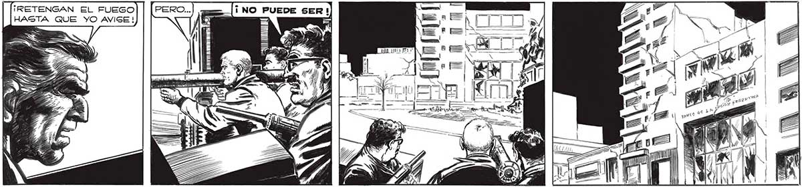
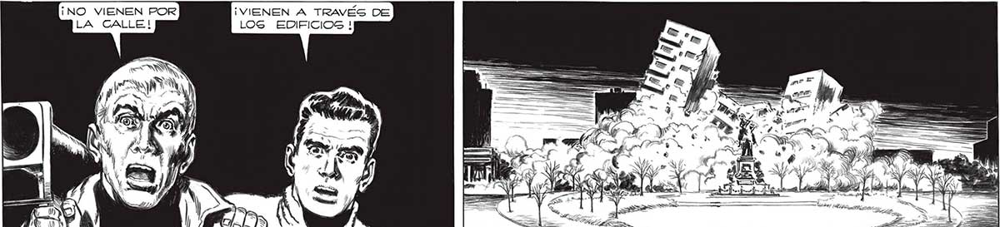

210 ¡RETENGAN EL FUEGO : == | HAGTA QUE YO AVISE ! UH = A E a. PE lnea MTS ¡== > eN NN E Mi ME y ¡VIENEN A TRAVÉS DE LOS EDIFICIOS ! ESS SUN DES AM ES yy ps ') Y y , | 4 p ELN e e SES ACT rr > AU == q > 8) : / A AI AN vil => s FIA r IS YY 88 NTRE El FRAGOR CATASTROFICO PE LOS EDIEICIOS GueE SE DESPLOMABAN. RETUMBABAN LOG PASOS, COMO GOLPES DE MARTINETES, DE LAS INCREIÍS BLES BESTIAS.

